REA는 무엇이고, 왜 정확도가 올라갈까요
REA는 이미 만들어진 앱을 거꾸로 뜯어보고, 어떻게 돌아가는지 알아내는 도구예요. 영상 첫 화면이 이걸 한 줄로 보여 줘요. 왼쪽 아래 작은 글씨가 'One CLI + MCP server for agents', 그 아래가 'From binaries to websites'예요. 에이전트가 쓰는 명령줄 도구이자 MCP(Model Context Protocol) 서버이고, 바이너리부터 웹사이트까지 다룬다는 뜻이에요.

발표자는 이 저장소가 공개 며칠 만에 GitHub 별 6만 개를 넘겼다고 말해요. 영상 속 저장소 카드에는 70.9k가 찍혀 있어요. 사람들이 이걸로 Adobe Premiere나 Photoshop 같은 앱을 따라 만들었다고도 소개해요.
분석 대상이 넓다는 게 발표자가 꼽는 가장 흥미로운 점이에요. 아래 화면은 네 칸으로 나뉘어 있어요. 왼쪽 위 Desktop에는 Figma 같은 데스크톱 앱, 오른쪽 위 Games에는 게임 런처들, 아래 Web과 Mobile에는 웹 앱과 아이폰·안드로이드 앱이 들어 있어요.
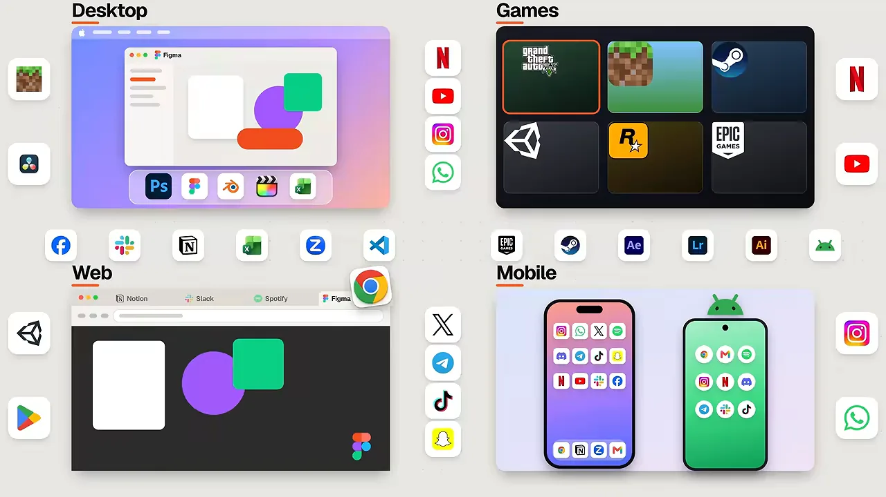
바이너리까지 내려가서 읽어요
REA는 앱을 바이너리 수준까지 내려가서 읽어요. 아래 화면은 Spotify 바이너리를 16진수로 펼친 모습이에요. 맨 위 두 줄에서 주황색으로 칠한 바이트를 오른쪽 글자로 읽으면 toggleLike가 돼요. 좋아요 버튼 기능의 이름이 실행 파일 안에 그대로 남아 있는 거예요.
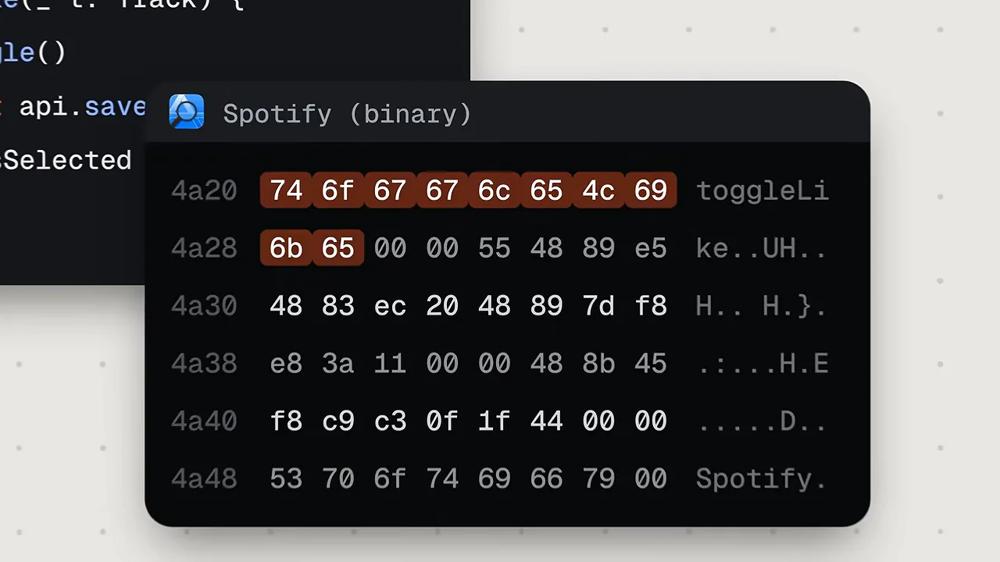
왜 정확도가 올라갈까요
발표자는 REA를 스펙 주도 개발과 같은 흐름으로 설명해요. AI가 정확하게 만들려면 컨텍스트가 더 필요하다는 거예요. 앱을 따라 만들 때는 "그 앱이 실제로 어떻게 동작하는지"에 대한 증거가 그 컨텍스트예요.
If you want to have a clone anything, well, you got to give more context.
뭔가를 따라 만들고 싶다면 컨텍스트를 더 줘야 해요.
— 영상 01:05
영상은 이 주장을 그래프 하나로 보여 줘요. 가로축이 Context, 세로축이 Accuracy예요. 왼쪽 아래에서 시작한 주황색 곡선이 컨텍스트가 늘수록 위로 올라가요.
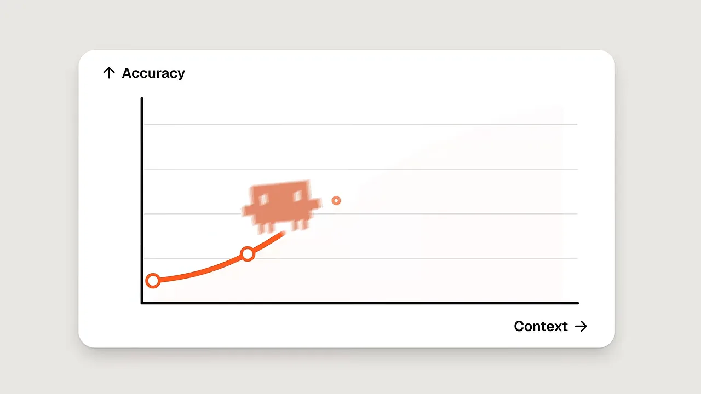
REA가 일하는 방식
발표자는 REA를 하나의 스킬로 생각하라고 해요. 스킬 밑에 여러 분석 도구가 MCP 형태로 붙어 있어요. 데스크톱 앱에는 Hopper, 웹 앱에는 JavaScript 분석기나 브라우저를 쓰는 식이에요. 스킬은 AI 에이전트에게 이 도구들을 언제 어떻게 써서 정보를 모을지 가르쳐요.
화면의 'How REA works' 도식을 위에서부터 따라가 보면 흐름이 한 바퀴 도는 고리예요. 맨 위 Agent가 'ASKS' 화살표로 가운데 REA 상자에 물어요. REA는 아래 다섯 도구(Hopper, Ghidra, IDA(Interactive Disassembler), 'JS analyser', Browser)로 갈라져 일을 시켜요. 도구들이 찾은 것은 맨 아래 Evidence 폴더로 모이고, 오른쪽 'FINDINGS' 화살표를 타고 다시 Agent에게 돌아가요.
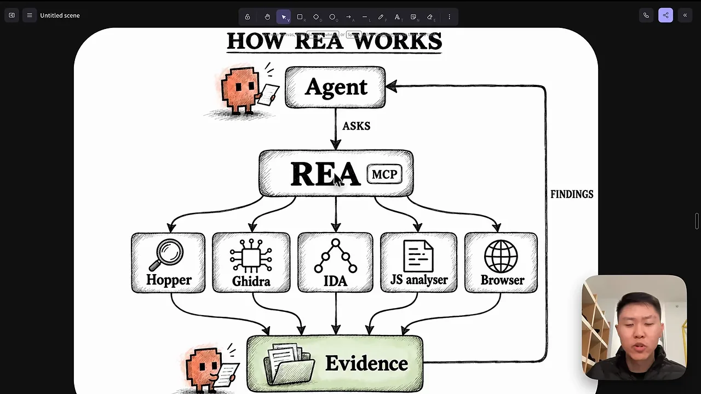
이어지는 'What REA can read' 슬라이드는 읽을 수 있는 대상과 그 뒤의 순서를 보여 줘요. 왼쪽에 데스크톱 앱과 게임, JavaScript와 Electron 앱, 웹사이트, 안드로이드 앱, .NET 앱, 펌웨어 아이콘이 있어요. 화살표를 따라가면 Claude + REA가 읽고, How it works로 작동 방식을 정리하고, 마지막 Build에서 다시 만들어요.
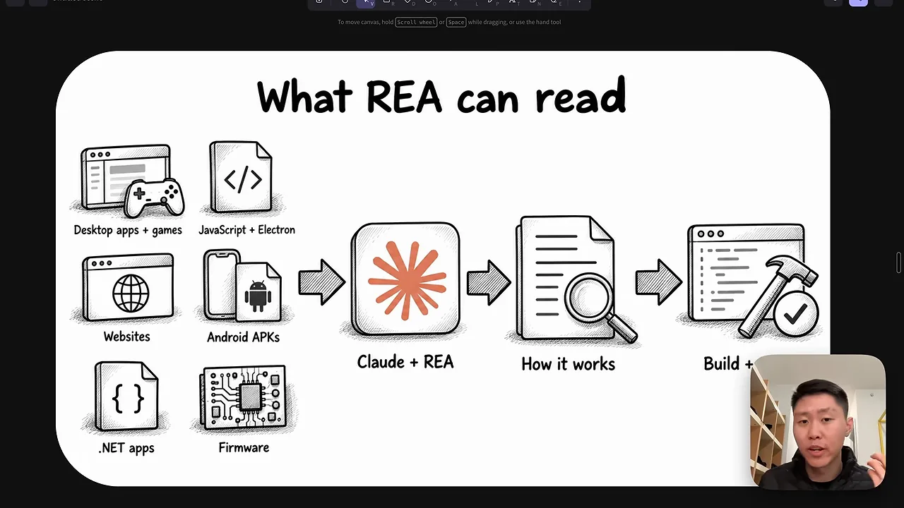
설치하기
설치는 명령 한 줄로 시작해서, 질문 몇 개에 답하면 끝나요. 영상의 순서를 따라가 볼게요.
Node 버전부터 확인해요
발표자는 설치 전에 Node.js 버전을 먼저 확인하라고 권해요. 24 이상이어야 한다고 말해요. 버전이 낮으면 brew upgrade node로 올리면 돼요.
node -v
brew upgrade node # 버전이 낮을 때만아래 터미널 화면에서 node -v 바로 밑에 찍힌 v26.10.0이 발표자의 버전이에요.
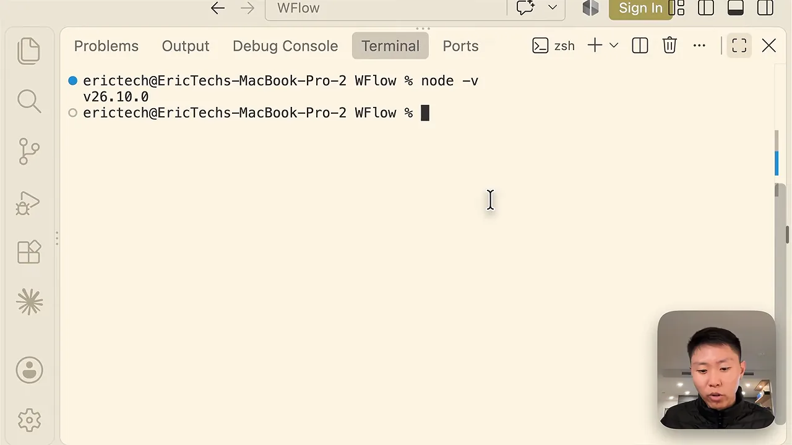
설치 명령 한 줄
GitHub README의 Quick start 칸에 있는 명령을 복사해서 터미널에 붙여 넣어요. 화면 가운데 회색 상자 속 npx rea-agents setup이 그 명령이에요. 그 아래 설명대로, 에이전트를 고르고 바뀔 내용을 확인해서 승인하는 과정이 이어져요.
npx rea-agents setup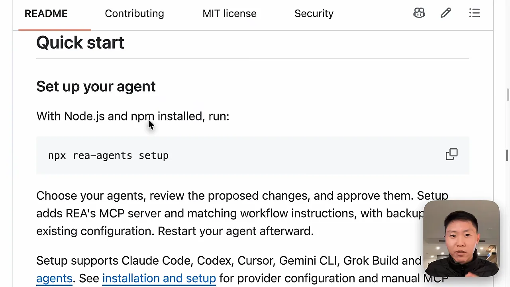
쓸 에이전트를 골라요
명령을 실행하면 먼저 'Which agents should use REA?'라고 물어요. 맨 위 Claude Code와 Codex 앞의 네모만 채워져 있어요. 발표자가 고른 두 개예요. 그 아래로 Cursor, Gemini CLI(Command-Line Interface), Windsurf, OpenCode, GitHub Copilot CLI 같은 선택지가 길게 이어져요. 발표자는 OpenCode나 다른 에이전트 하네스를 골라도 된다고 말해요.
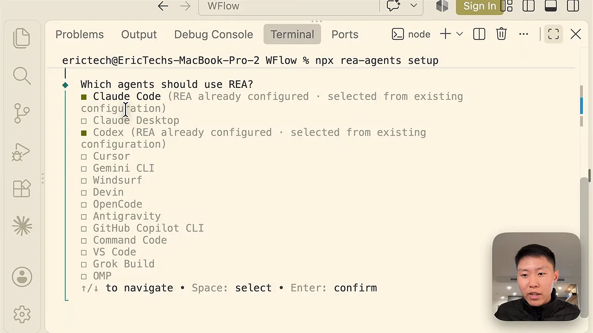
Hopper는 왜 깔까요
다음 질문은 바이너리를 깊이 분석할 Hopper를 설치할지예요. 발표자는 Hopper를 REA가 빌려 쓰는 외부 도구라고 설명해요. 그리고 평소 개발과 방향이 반대라는 점을 짚어요. 평소에는 개발자가 소스 코드를 쓰고, 그 코드가 앱을 움직여요. REA는 거꾸로 앱에서 출발해서, Hopper로 분석한 내용을 요구사항으로 바꾸고, 그걸 AI 에이전트에게 넘겨 다시 만들게 해요.
영상의 예시 화면이 이 가운데 단계를 보여 줘요. 왼쪽 Hopper 창에서 나온 화살표가 오른쪽 instructions.md로 이어져요. 문서에는 체크 표시가 붙은 요구사항 네 줄이 있어요. 전역 단축키 ⌥1, 마이크 녹음, 음성을 글로 바꾸기, 포커스된 앱에 붙여 넣기예요.
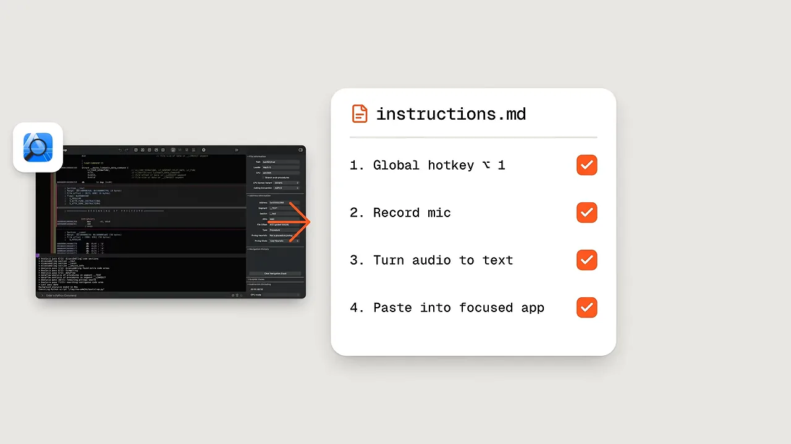
다섯 가지 변경을 승인해요
Hopper 설치에 동의하면, 설치 도구가 바꿀 내용을 한꺼번에 보여 주고 승인을 받아요. 발표자 말로는 다섯 가지예요. Hopper 분석 도구, Claude Code와 Codex 등록, 리버스 엔지니어링 스킬이에요. 화면 맨 아래 'Apply these 5 changes?'에 Yes를 고르면 적용돼요. 그 바로 위 줄이 'REA will preserve unrelated configuration'인 것도 볼 만해요. 기존 설정은 건드리지 않는다는 뜻이에요.
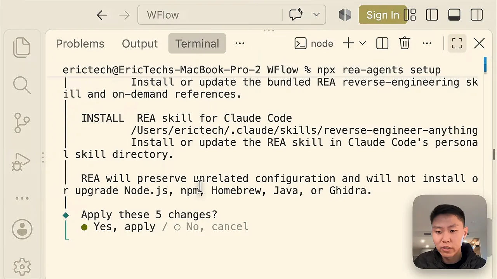
승인하면 Hopper Disassembler 창이 저절로 떠요. 라이선스 파일을 넣는 칸 아래 버튼 네 개 중 맨 왼쪽 'Try the Demo'를 눌러요. 발표자는 이어서 자동 확인을 고르고 넘어가요.
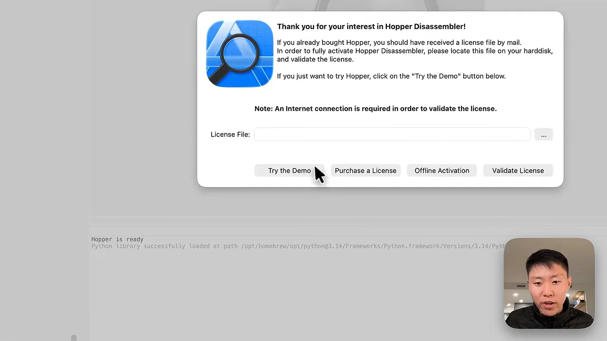
모든 단계가 끝나면 터미널에 요약이 떠요. 분석 도구는 Hopper, 연결된 에이전트는 Claude Code, Claude Desktop, Codex예요. 맨 아래 'REA is ready for local app analysis.'가 설치 완료 신호예요.
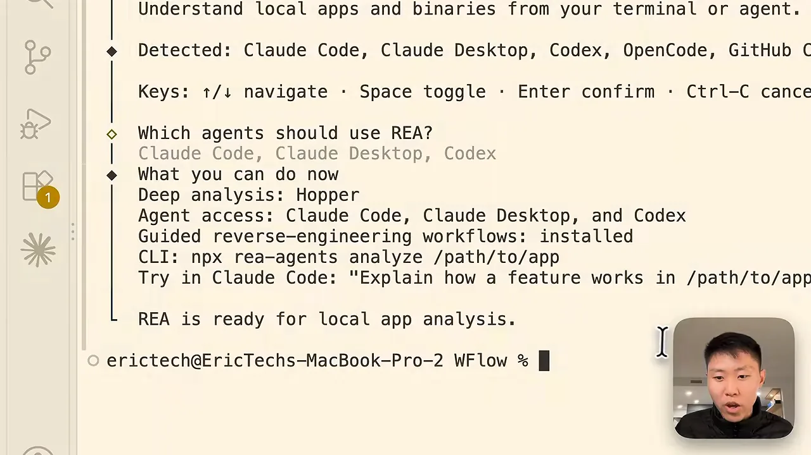
데모: Wispr Flow 따라 만들기
데모 대상은 Wispr Flow예요. 발표자가 매일 쓰는 음성 받아쓰기 데스크톱 앱이에요. 아이콘을 누르거나 단축키를 누르고 말하면 글로 바꿔 주고, 회의록도 만들어 줘요.
프롬프트 네 줄
발표자는 미리 써 둔 프롬프트를 Claude Code에 붙여 넣고 나머지를 맡겨요. 아래 화면 편집기에 그 네 줄이 있어요. 왼쪽 아래 작은 창은 Wispr Flow 공식 웹사이트예요. 프롬프트가 배경 자료로 쓰라고 한 그 사이트예요.
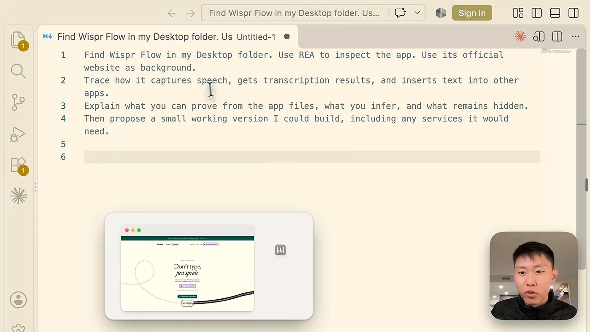
네 줄이 시키는 일을 한국어로 옮기면 이래요.
| 줄 | 시키는 일 |
|---|---|
| 1 | 데스크톱 폴더에서 Wispr Flow를 찾아 REA로 검사하고, 공식 웹사이트를 배경 자료로 써요 |
| 2 | 음성을 받고, 받아쓰기 결과를 얻고, 다른 앱에 글을 넣는 흐름을 추적해요 |
| 3 | 앱 파일로 증명할 수 있는 것, 추론한 것, 여전히 숨겨진 것을 나눠서 설명해요 |
| 4 | 직접 만들 수 있는 작은 작동 버전과, 거기 필요한 서비스를 제안해요 |
완성된 앱 'Utter'
결과물은 'Utter'라는 이름의 맥 앱이에요. 왼쪽 위 로고 옆에 Local 꼬리표가 붙어 있고, 메뉴는 Dictation, Notetaker, Settings 세 개예요. 가운데 파란 배너에는 'Your voice stays on your Mac'과 '⌥1을 누르고 어디서든 말하라'는 안내가 있어요. 오른쪽에는 누적 단어 수 1,996과 분당 135단어가 보여요. 아래 'TODAY' 목록이 지금까지 받아쓴 기록이에요.
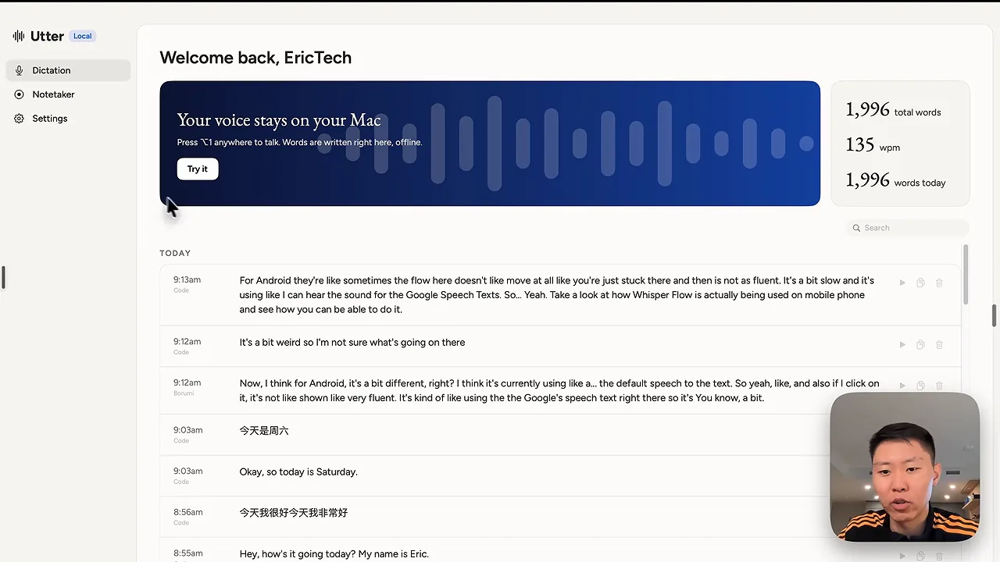
Notetaker를 누르면 지난 회의 기록이 나와요. 오른쪽 창 맨 위가 'Meeting · Oct 10, 8:47 AM'이고, 그 아래 You와 Others로 말한 사람을 나눠 대화가 정리돼 있어요. 발표자는 전체 기록을 보거나 이어서 녹음할 수 있다고 말해요.
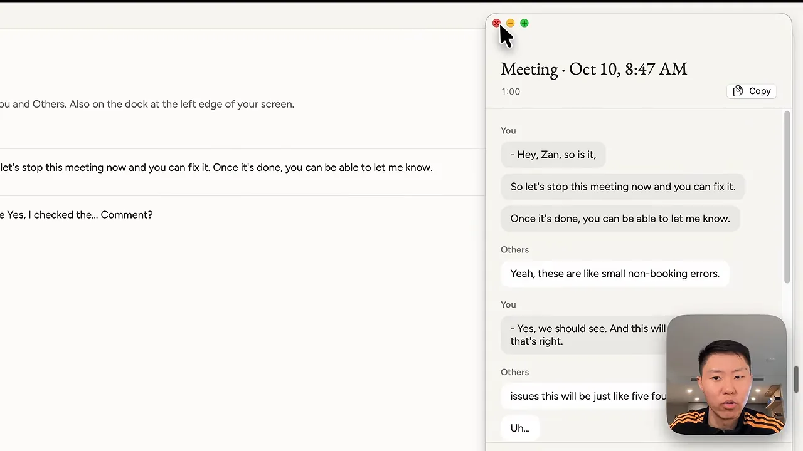
이어서 발표자는 단축키 ⌥1을 누르고 직접 말해 봐요. 영어로 말하던 중에 중국어로 '今天是周六'(오늘은 토요일이에요)라고 말해도 한 입력칸에 두 언어가 같이 받아써져요. 발표자는 기다림 없이 빠르다는 점, 그리고 음성이 인터넷으로 나가지 않고 맥 안에서 처리된다는 점을 강조해요.
원본을 복사한 게 아니에요
Claude Code가 남긴 설명을 보면 이 앱이 어떻게 만들어졌는지 알 수 있어요. 'How it turns your voice into words' 아래 네 줄을 보세요. 첫 줄이 굵은 글씨로 'It does not use Wispr Flow'예요. 대신 OpenAI가 만든 무료 음성 인식 도구 Whisper를 쓰고, 그게 맥에서 직접 돌아서 목소리가 인터넷으로 나가지 않는대요. 더 크고 똑똑한 모델을 넣었고, 짧은 테스트는 0.5초도 안 걸렸다고 해요.
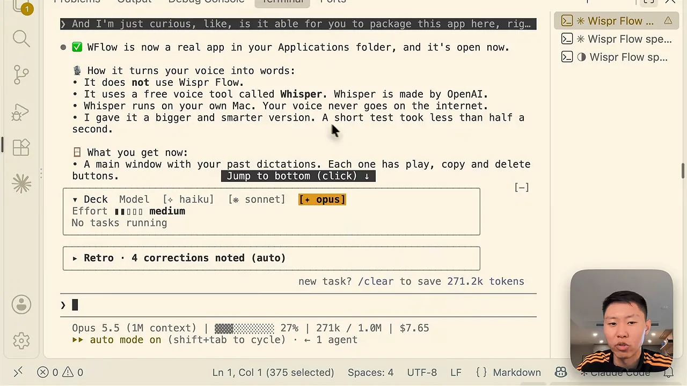
그러니까 '복제'라는 말과 달리, 원본 코드를 가져온 게 아니에요. 원본이 무엇을 하는지(단축키, 녹음, 받아쓰기, 붙여 넣기)를 증거로 알아낸 다음, 같은 일을 하는 앱을 새로 만든 거예요. 프로젝트 폴더 이름은 WFlow, 앱 이름은 Utter예요.
코드는 더 이상 해자가 아니에요
마지막은 발표자의 의견이에요. 이런 도구가 나오면서 앱의 코드는 더 이상 해자가 아니라고 봐요. 진짜 해자는 브랜드, 실제 사용자, 그리고 데이터라는 거예요.
영상은 이 주장을 그림 한 장으로 정리해요. 왼쪽 Brand 카드에는 주황 테두리를 두른 앱 아이콘이 있고, 오른쪽 Users 카드는 아직 비어 있어요. 배경에는 같은 아이콘이 흐릿하게 잔뜩 깔려 있어요. 앱 자체는 얼마든지 복사될 수 있다는 뜻이에요.
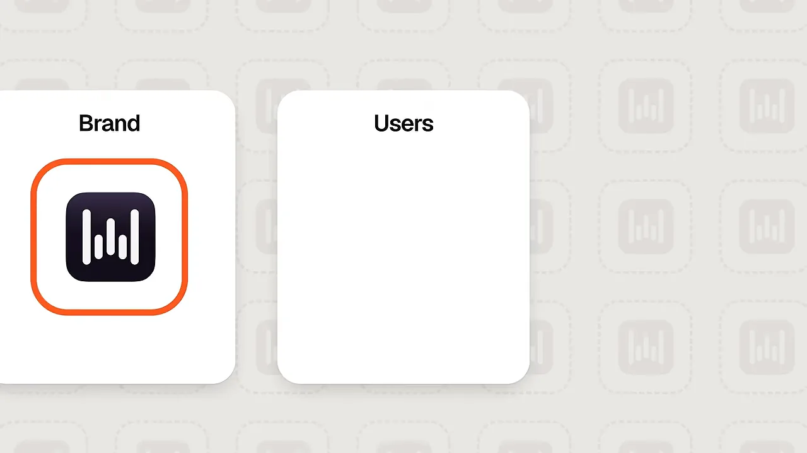
PhotoCraft라는 예
발표자가 든 예는 최근 화제가 된 PhotoCraft예요. Adobe의 Photoshop, Premiere 같은 앱 묶음을 통째로 Rust로 다시 만들었다고 소개해요. Rust가 빨라서 지금 매일 쓰는 도구들을 일대일로 따라 할 수 있다는 거예요. 화면은 PhotoCraft 웹사이트예요. 큰 제목이 'The image editor you already know how to use'이고, 그 아래 작은 글씨로 레이어, 마스크, 브러시 같은 기능을 Rust로 만든 네이티브 앱이라고 소개해요.
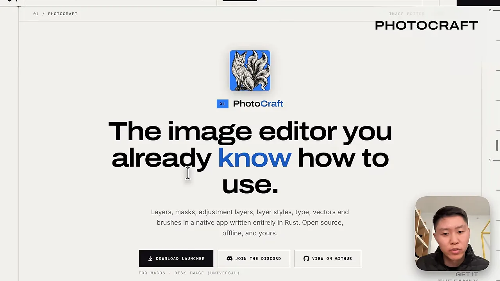
이어지는 그림은 Adobe 앱 네 개를 나란히 놓아요. Ps, Pr, Lr 옆에는 점선 테두리의 복제본이 하나씩 붙어 있어요. Lr 복제본은 반쯤 흐리고, 오른쪽 아래 Ae 옆은 아직 비어 있어요.
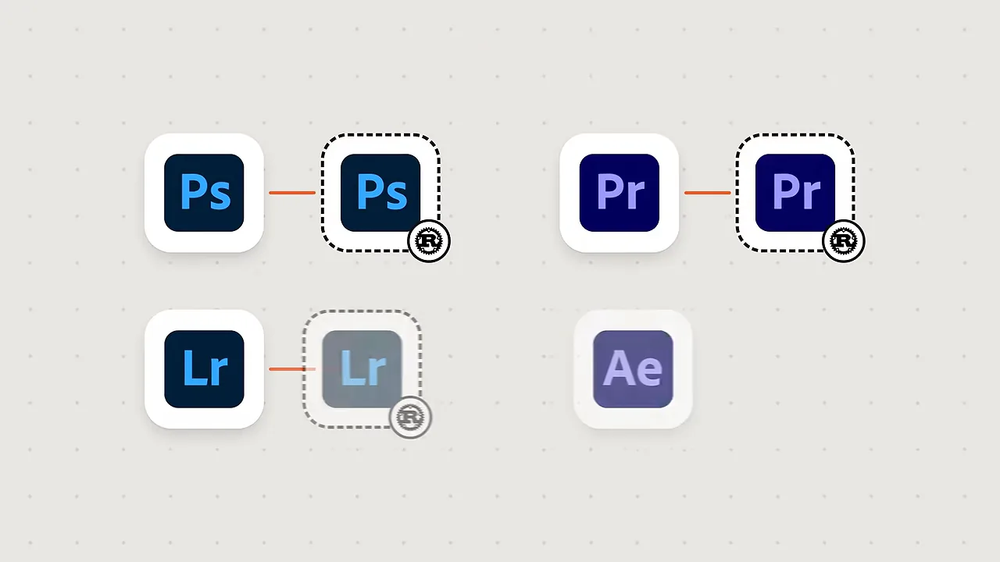
그래서 발표자는 마케팅과 브랜드를 더 잘 쌓으라고 권해요. 강한 브랜드는 누가 앱을 따라 만들어도 빼앗아 갈 수 없기 때문이에요.